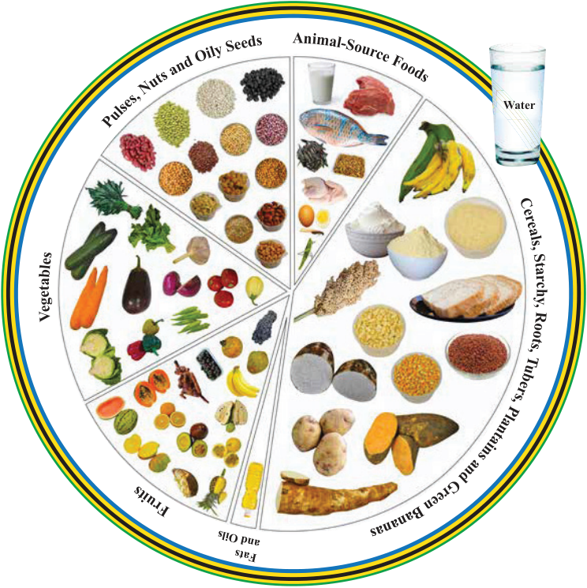

(d) Fruits: This group include foods such as pineapples, oranges, mangoes, papayas, baobab fruit, tamarind, avocado, guava and lemons. They provide mainly vitamins and minerals to strengthen the immune system.
(e) Pulses, Nuts and Oily seeds: This group include food such as green gram, cowpeas, cashewnuts, groundnuts and sunflower seeds. Pulses and Nuts are good sources of protein, vitamins and minerals. Oily seeds provide oil which provide energy in our body.
(f) Fats and oils: This group include foods such as margarine, butter, palm oil, sesame oil, coconut oil and sunflower oil. Fats and oil provide energy to the body.
Figure 2.1 illustrates the main food groups.
